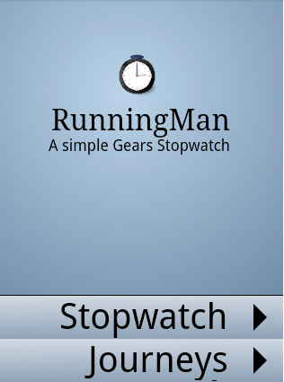
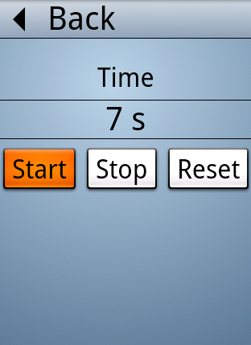
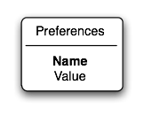
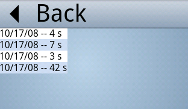

Create a simple JavaScript stopwatch application that uses the Gears APIs on Android!
|

|
 |
Contents
- Introduction
- Step 1 Basic application
- Step 2 Adding a Shortcut
- Step 3 Saving Information
- Step 4 Saving run times & showing journeys
- Step 5 Saving geolocation information
- Step 6 Improve the summary information
- Step 7 Using the Maps API
- Step 8 Offline mode
- More information
Introduction
This tutorial describes how to create a simple JavaScript application that uses the APIs provided by Gears on Android. The sample application, called RunningMan, is a location-aware stopwatch that measures both the time and route taken for a journey, showing the journey on a map.
Though written specifically for Android, RunningMan can also be used on the other platforms that Gears supports as the APIs are the same. However, you may need to modify the HTML and CSS as Document Object Model support varies widely between browsers.
We recommend you first work through this tutorial using a desktop browser with good debugging capabilities. When you are happy with your application, test it using the Android emulator and finally try it out on a real Android device. Information about the Android emulator is available from http://code.google.com/android/reference/emulator.html
Get the source code
You can download the HTML and JavaScript source used in this tutorial from the Gears Resources and Tools page. Scroll down the page to the Resources, Samples and Tools download section then click Download Samples and Tools.
If you want to follow the tutorial step-by-step by rewriting the code yourself, which you are encouraged to do, you will probably want to still use the CSS file provided, along with the images. Note that the CSS file needs to be in a parent directory and the images to be in a parent images directory.
Sign up for a Google Maps API key
To complete this tutorial you will need to sign up for a Google Maps API development key. You will need a Google account to do this. Though your key should be delivered to you immediately, you may want to get it before starting this tutorial.
Step 1: Basic application
This section covers the basic HTML organization in RunningMan, and describes how to write a JavaScript stopwatch.
Step 1a - HTML organization
In terms of user interface, RunningMan appears as a front page with
buttons leading to other pages. In terms of HTML, those other pages are
hidden divisions in a single HTML page. JavaScript is held in a model.js
file.
The following HTML provides the basic skeleton for RunningMan. You
can type this, or copy and paste it into your favorite editor then save
the file. Alternatively, open the index.html file in the step1a directory
of the zip download. Subsequent sections of this tutorial add to this file.
<html>
<head>
<title>RunningMan</title>
<link rel="stylesheet" type="text/css" href="../run.css" />
<script type="text/JavaScript" src="model.js"></script>
<meta name="viewport" content="width=320; user-scalable=false">
</head>
<body>
<div id="mainScreen" align="center">
<div id="title">
<img src="../images/icon.png" width="48" height="48">
<br>RunningMan<div id="subtitle">A simple Gears Stopwatch</div>
</div>
<div class="main-menu" align="right">
<div class="go-button" onclick="go('watch')">Stopwatch</div>
<div class="go-button" onclick="go('journeys')">Journeys</div>
</div>
</div>
<div id="watch" align="center">
<div class="content">
The stopwatch will be placed here
</div>
<div class="menu" align="left">
<div class="back-button" onclick="go('mainScreen')">Back</div>
</div>
</div>
<div id="journeys">
<div class="content">
Journeys will be placed here
</div>
<div class="menu" align="left">
<div class="back-button" onclick="go('mainScreen')">Back</div>
</div>
</div>
</body>
</html>
The model.js file contains all the JavaScript code for RunningMan. The
following functions define the simple navigation mechanisms used:
/*
* Navigation functions
*/
function go(name) {
hideAllScreens();
var functionName = "on_" + name;
showDiv(name);
if (window[functionName] != null) {
window[functionName]();
}
}
function showDiv(name) {
var elem = document.getElementById(name);
if (elem) {
elem.style.display="block";
}
}
function hideDiv(name) {
var elem = document.getElementById(name);
if (elem) {
elem.style.display="none";
}
}
function hideAllScreens() {
hideDiv('mainScreen');
hideDiv('watch');
hideDiv('journeys');
}
Again, you can type this code, or copy and paste it into your favorite
editor then save the file. Alternatively, open the model.js file in the
step1a directory of the zip download.
By default, only the mainScreen division is shown, using CSS. When
the user clicks a button, the go() function is called passing the parameter
associated with the button that was clicked (watch, journeys or mainscreen).
The go() function hides all divisions then shows the user-selected division.
If a function with the same name as the division, but prefixed by on_ exists,
then that function is called. This makes it easier to write functions handling
the behavior of the different screens and is described later in this tutorial.
Load
either your own HTML file or the index.html file from the step1a directory
of the zip
download in a browser. You will see the main screen (image on the left
below). Click on the Stopwatch link to go to a blank screen (image on the
left below). Click on the Back button to return to the main screen.
 |
 |
Step 1b: Writing a stopwatch
The next step is to add a basic timer page to enable the user to start, stop, and reset the stopwatch and to display the elapsed time:

First declare a global object in model.js:
var global = new Object();
Modify the HTML to call the main() function when the page is loaded:
<body onload="main()">
Add the main() function to model.js:
/*
* Main function
*/
function main() {
global.startTime = null;
updateTime();
}
The global.startTime object contains the starting time of the stopwatch,
while the updateTime() function displays the elapsed time.
Now modify the watch division to add the HTML to call the startRun(),
stopRun(), and resetRun() functions when the user clicks the corresponding
buttons:
<div id="watch" align="center">
<div class="content">
<div id="timeTitle">Time</div>
<div id="timeDisplay"></div>
<input type="button" onclick="startRun()" value="Start"></input>
<input type="button" onclick="stopRun()" value="Stop"></input>
<input type="button" onclick="resetRun()" value="Reset"></input>
</div>
<div class="menu" align="left">
<div class="back-button" onclick="go('mainScreen')">Back</div>
</div>
</div>
Add the startRun(), stopRun() and resetRun() functions to model.js:
/*
* Timer functions
*/
function startRun() {
global.updateInterval = setInterval("updateTime()", 1000);
global.startTime = new Date();
}
function stopRun() {
clearInterval(global.updateInterval);
}
function resetRun() {
stopRun();
global.startTime = null;
updateTime();
}
When the user clicks the Start button, the startRun() function saves
the current time in the global object (global.startTime), and updates the
elapsed time every second through the updateTime() function; the stopRun()
function clears the timer object.
The updateTime() function calls a formatTime() function. Add both to
model.js:
/*
* Display stopwatch time value
*/
function updateTime() {
var time = 0;
if (global.startTime != null) {
time = (new Date()).getTime() - global.startTime;
time = (time/1000)|0;
}
var timeDiv = document.getElementById("timeDisplay");
timeDiv.innerHTML = formatTime(time);
}
/*
* Format a time value given in seconds
*/
function formatTime(aTime) {
var seconds = aTime % 60;
var minutes = ((aTime / 60) |0) % 60;
var hours = (aTime / 3600) |0;
var time = "0";
if (seconds > 0) {
time = seconds + " s";
}
if (minutes > 0) {
time = minutes + " min " + time;
}
if (hours > 0) {
time = hours + " h " + time;
}
return time;
}
Load either your own HTML file or the index.html file from the step1b
directory of the zip download in a browser to see this in action.
Step 2: Adding a Shortcut
It's now time to add Gears to our sample RunningMan application!
At the moment, the only way to launch the application is to either type the whole URL in a browser, or save it in the browser's bookmarks. Gears lets us create an icon on the Android desktop.
The first step is to import gears_init in the HTML file (red text):
<head>
<title>RunningMan</title>
<link rel="stylesheet" type="text/css" href="../run.css" />
<script type="text/JavaScript" src="gears_init.js"></script>
<script type="text/JavaScript" src="model.js"></script>
<meta name="viewport" content="width=320; user-scalable=false">
</head>
Now, modify the main() function by adding the red text
below to
model.js, replacing YOUR_URL with
the URL for your files:
/*
* Main function
*/
function main() {
global.startTime = null;
updateTime();
global.siteUrl = "http://YOUR_URL/index.html";
installShortcut();
}
Finally, define the installShortcut() function in model.js, this function
uses the Gears
Desktop API to install a shortcut icon on the Android desktop:
/*
* Install shortcut
*/
function installShortcut() {
var desktop = google.gears.factory.create('beta.desktop');
desktop.createShortcut("RunningMan", global.siteUrl,
{ "48x48" : "../images/icon.png" }, "RunningMan application");
}
Refresh your page, or load either your own HTML file or the index.html
file from the step2 directory of the zip download in a browser. You should be greeted by a shortcut dialog:

Click Yes to accept the shortcut, then go back to the home screen, and you should see your icon. The following is an example from an Android device:

Clicking on the icon opens RunningMan in the browser. You can manipulate this shortcut in the same way as any other shortcut, move it to a different screen, put it in a folder, and so on.
Step 3: Saving Information
With any application it is generally helpful to be able to save settings
or preferences. In it's current state, the RunningMan application asks
the user if they would like to create a shortcut icon every time it is
opened. It would be a much better experience for the user if RunningMan
did not repeatedly prompt them once the icon has been created.
To store this information, we will use the Gears Database
API. This API gives us access to a SQLite database, saved locally on
the device.
Creating a preferences table
RunningMan needs to use a table to store preferences:

The first step is to add the following function to model.js. This function
creates a beta database and Preferences table within that database:
/*
* Initialize the Database
*/
function initDB() {
global.db = google.gears.factory.create('beta.database');
global.db.open('stopwatch');
global.db.execute('CREATE TABLE IF NOT EXISTS Preferences ' +
'(Name text, Value int)');
}
Now add the following two utility functions to model.js. These functions
set and get the value of a preference:
function getPreference(name) {
var result = false;
var rs = global.db.execute('SELECT Value FROM Preferences WHERE Name = (?)', [name]);
if (rs.isValidRow()) {
result = rs.field(0);
}
rs.close();
return result;
}
function setPreference(name, value) {
global.db.execute('INSERT INTO Preferences VALUES (?, ?)', [name, value])
}
Using the database
Modify the installShortcut() function to call the getPreference and setPreference
functions in model.js:
function installShortcut() {
if (getPreference('Shortcut') == false) {
var desktop = google.gears.factory.create('beta.desktop');
desktop.createShortcut("RunningMan", global.siteUrl,
{ "48x48" : "../images/icon.png" }, "RunningMan application");
setPreference('Shortcut', true);
}
}
Finally, modify the main() function to call initDB():
function main() {
global.startTime = null;
updateTime();
global.siteUrl = "http://YOURURL/index.html";
initDB();
installShortcut();
}
RunningMan now only prompts the user once regarding installation of the shortcut icon.
Step 4: Saving times and showing journeys
The RunningMan application, for the moment, is still a very simple stopwatch. Wouldn't it be great if we could save each measured time?
Saving run times
This section adds the ability to save information in the following table:

First create a new Times table to hold this information in initDB() in model.js:
function initDB() {
global.db = google.gears.factory.create('beta.database');
global.db.open('stopwatch');
global.db.execute('CREATE TABLE IF NOT EXISTS Preferences ' +
'(Name text, Value int)');
global.db.execute('CREATE TABLE IF NOT EXISTS Times ' +
'(StartDate int, StopDate int, Description text)');
}
Now modify the startRun() and stopRun() functions to save the date
and time information:
function startRun() {
global.updateInterval = setInterval("updateTime()", 1000);
global.startTime = new Date();
var time = global.startTime.getTime();
global.db.execute('INSERT INTO Times (StartDate) VALUES (?)',
[time]);
}
function stopRun() {
clearInterval(global.updateInterval);
var stopDate = new Date();
var time = stopDate.getTime();
global.db.execute('UPDATE Times SET StopDate = (?) ' +
'WHERE ROWID = (?)', [time,
global.db.lastInsertRowId]);
}
Displaying journeys
Now that date and time information is saved, we can display it in the Journeys screen. First, modify the HTML:
<div id="journeys">
<div class="content">
<div id="journeysContent"><h2>No journeys yet!</h2></div>
</div>
<div class="menu" align="left">
<div class="back-button" onclick="go('mainScreen')">Back</div>
</div>
</div>
Now add the on_journeys() function to model.js. This is called when
the user switches to the Journeys screen:
/*
* Show journeys
*/
function on_journeys() {
var rows = 0;
var html = "";
var rs = global.db.execute('SELECT ROWID, Description FROM
Times');
while (rs.isValidRow()) {
var rowID = rs.field(0);
var description = rs.field(1);
if (description == null) {
description = createDescription(rowID);
}
var rowType;
if (rows % 2 == 0) {
rowType = "rowA";
} else {
rowType = "rowB";
}
rows++;
html += "<div class='" + rowType + "'>";
html += "<div class='rowDesc'>" + description + "</div>";
html += "</div>";
rs.next();
}
if (html != "") {
var elem = document.getElementById('journeysContent');
elem.innerHTML = html;
}
}
The on_journeys() function iterates through the saved journeys. The function first gets the description (if this is not in the database it is created by calling the createDescription()). The on_journeys() function then displays the description in a division using a CSS class of either rowA or rowB which are displayed in alternating colors.
Add the createDescription() function to model.js:
/*
* Create the text displayed in the Journeys pane for one record
*/
function createDescription(rowID) {
var description = "";
var rs = global.db.execute('SELECT StartDate, StopDate FROM Times
' + 'WHERE ROWID = (?)', [rowID]);
if (rs.isValidRow()) {
var sDate = rs.field(0);
var eDate = rs.field(1);
var time = (((eDate - sDate)/1000)|0); // elapsed seconds
var startDate = new Date();
startDate.setTime(sDate);
description = startDate.toLocaleDateString() + " -- ";
description += formatTime(time);
global.db.execute('UPDATE Times SET Description = (?) ' +
'WHERE ROWID = (?)', [description, rowID]);
}
return description;
}
Times are now automatically recorded, and going to the Journeys pane displays them:

Removing records
Now that the application displays recorded times, it would be useful to be able to delete them.
Add a delete button by modifying the on_journeys function:
html += "<div class='" + rowType + "'>";
html += "<div class='rowDesc'>" + description + "</div>";
html += "<div class='rowImg' onclick='deleteRecord(" + rowID + ")'>";
html += "<img src='delete.png'></div";
html += "</div>";
Add the deleteRecord() function to model.js:
/*
* Delete a recorded time
*/
function deleteRecord(rowID) {
var answer = confirm("Delete this run?");
if (answer) {
global.db.execute('DELETE FROM Times WHERE ROWID = (?)',
[rowID]);
go('journeys');
}
}
Refresh your page, or load either your own HTML file or the index.html
file from the step4 directory of the zip
download in a browser. The Journeys pane now looks like this:

Step 5: Saving geolocation information
RunningMan can now record times in the database, show the saved times, and remove them. Let's introduce a new API, Geolocation.
The Geolocation API enables RunningMan to record the position of the device on which it is running when the timer starts, save any intermediate positions, and save the position when the timer is stopped. Let's create a new database table to hold this information:
Add the following red text, to create a Positions table, to model.js:
function initDB() {
global.db = google.gears.factory.create('beta.database');
global.db.open('stopwatch');
global.db.execute('CREATE TABLE IF NOT EXISTS Preferences ' +
'(Name text, Value int)');
global.db.execute('CREATE TABLE IF NOT EXISTS Times ' +
'(StartDate int, StopDate int, Description text)');
global.db.execute('CREATE TABLE IF NOT EXISTS Positions ' +
'(TimeID int, Date int, Latitude float, ' +
' Longitude float, Accuracy float, Altitude float, ' +
' AltitudeAccuracy float)');
}
Now create a geolocation object using the main() function, in model.js:
function main() {
global.startTime = null;
global.geo = google.gears.factory.create('beta.geolocation');
updateTime();
global.siteUrl = "http://YOURURL/index.html";
initDB();
installShortcut();
}
When the timer starts RunningMan also needs to start a geolocation
watcher to receive a notification when the position changes and to save
the new position in the database. To do this, add the following red text
to model.js:
function startRun() {
global.updateInterval = setInterval("updateTime()", 1000);
global.startTime = new Date();
var time = global.startTime.getTime();
global.db.execute('INSERT INTO Times (StartDate) VALUES (?)', [time]);
global.currentTimeID = global.db.lastInsertRowId;
global.currentGeoWatcher = global.geo.watchPosition(function
(position) {
global.db.execute('INSERT INTO Positions (TimeID, Date,
Latitude, ' +
'Longitude, Accuracy, Altitude, AltitudeAccuracy) ' +
'VALUES (?, ?, ?, ?, ?, ?, ?)',
[global.currentTimeID, position.timestamp.getTime(),
position.latitude, position.longitude,
position.accuracy,
position.altitude, position.altitudeAccuracy]);
}, null, { "enableHighAccuracy" : true});
}
Note that this does not deal with errors (it only passes a null parameter):
errors are simply discarded; the enableHighAccuracy argument
forces the application to use the best available function, which is likely
to be the GPS on an Android G1 device.
Now modify the stopRun() function to remove the geolocation watcher:
function stopRun() {
clearInterval(global.updateInterval);
var stopDate = new Date();
var time = stopDate.getTime();
global.db.execute('UPDATE Times SET StopDate = (?) ' +
'WHERE ROWID = (?)', [time, global.currentTimeID]);
if (global.currentGeoWatcher != null) {
global.geo.clearWatch(global.currentGeoWatcher);
global.currentGeoWatcher = null;
}
}
RunningMan also needs to modify the database update to use the global.currentTimeID
instead of the previous global.db.lastInsertRowId, as many new inserts
could potentially have happened.
Finally, the additional information also needs to be deleted when a timing has been removed:
function deleteRecord(rowID) {
var answer = confirm("Delete this run?");
if (answer) {
global.db.execute('DELETE FROM Positions WHERE TimeID = (?)',
[rowID]);
global.db.execute('DELETE FROM Times WHERE ROWID = (?)',
[rowID]);
go('journeys');
}
}
Step 6: Improve the summary information
Now that RunningMan saves position information, the description displayed in the Journeys screen can be improved to give, for example, the number of positions saved, the distance travelled, and the average speed.
Modify the createDescription() function to call a positionInformation()
function in model.js:
description = startDate.toLocaleDateString() + " -- ";
description += formatTime(time);
description += positionInformation(rowID);
The positionInformation() function iterates through the associated
positions, and returns the additional information. Add the positionInformation()
function to model.js:
/*
* For a given row, returns distance traveled, average speed,
* and number of positions saved
* /
function positionInformation(rowID) {
var distance = 0;
var prevLat = null;
var prevLon = null;
var firstTime = 0;
var lastTime = 0;
var nbPositions = 0;
var rs = global.db.execute('SELECT Latitude, Longitude, Date ' +
'FROM Positions WHERE TimeID = (?) ' +
'ORDER BY Date', [rowID]); while (rs.isValidRow()) { nbPositions++; var lat = rs.field(0); var lon = rs.field(1); var date = rs.field(2); if (firstTime != 0) { distance += haversineDistance(prevLat, prevLon, lat, lon); } else { firstTime = date; } prevLat = lat; prevLon = lon; lastTime = date; rs.next(); } var secTime = (lastTime - firstTime) / 1000; var averageSpeed = ((distance * 3600) / secTime); var roundedDistance = (((distance*1000)|0)/1000); var roundedSpeed = ((averageSpeed*1000)|0)/1000; var description = " (" + roundedDistance + " km)"; description += "<br>Average speed: " + roundedSpeed + " km/h"; description += "<br>" + nbPositions + " positions saved"; return description; }
To compute the distance between the coordinates, RunningMan uses the following functions, add these to model.js:
/*
* Utility function to compute the distance between
* two coordinates
*/
Number.prototype.toRad = function() { // convert degrees to radians
return this * Math.PI / 180;
}
function haversineDistance(lat1, long1, lat2, long2) {
// from http://www.movable-type.co.uk/scripts/latlong.html
var R = 6371; // km
var dLat = (lat2-lat1).toRad();
var dLon = (long2-long1).toRad();
var a = Math.sin(dLat/2) * Math.sin(dLat/2) +
Math.cos(lat1.toRad()) * Math.cos(lat2.toRad()) *
Math.sin(dLon/2) * Math.sin(dLon/2);
var c = 2 * Math.atan2(Math.sqrt(a), Math.sqrt(1-a));
var d = R * c;
return d;
}
For more information on calculating distance and bearing between two points see http://www.movable-type.co.uk/scripts/latlong.html.
Refresh your page, or load either your own HTML file or the index.html
file from the step6 directory of the zip
download in a browser. Going back to the Journeys screen, you should
now see the new information, for example:

Step 7 Using the Maps API
This section covers using the Google Maps API to plot movement on a map.
If you haven't already done so, you need to sign up for a Google Maps API development key. When you have your key, add the following red text to your HTML file, replacing YOURKEY with your actual Maps API key:
<script type="text/JavaScript" src="gears_init.js"></script>
<script src="http://maps.google.com/maps?file=api&v=2&key=YOURKEY"
type="text/JavaScript"></script>
<script type="text/JavaScript" src="model.js"></script>
Note: Google Maps API keys are dependent on the server's URL.
Now add a call to the unload function:
<body onload="main()" onunload="GUnload()">
RunningMan can now use the JavaScript functions of the Maps API!
The next step is to add a new division section to the end of the HTML file. This displays the map, plus a row of buttons used for navigation:
<div id="location" align="center">
<div class="content">
<div id="mapLabel">Map</div>
<div id="map" style="width: 300px; height: 300px"></div>
</div>
<div class="menu" align="left">
<div class="back-button"
onclick="go('mainScreen')">Back</div>
</div>
<div id="map-buttons" align="left">
<div class="button-left" onclick="mapLeft()"></div>
<div class="button-right" onclick="mapRight()"></div>
<div class="button-up" onclick="mapUp()"></div>
<div class="button-down" onclick="mapDown()"></div>
<div class="button-zoomin" onclick="mapZoomIn()"></div>
<div class="button-zoomout" onclick="mapZoomOut()"></div>
</div>
</div>
</body>
</html>
Add this division to the hideAllScreens() function in model.js:
function hideAllScreens() {
hideDiv('mainScreen');
hideDiv('watch');
hideDiv('journeys');
hideDiv('location');
}
Now modify the main() function in model.js to set the
default mapZoom value:
function main() {
global.startTime = null;
global.geo = google.gears.factory.create('beta.geolocation');
global.mapZoom = 15;
updateTime();
global.siteUrl = "http://YOURURL/index.html";
initDB();
installShortcut();
}
Add the following functions, that provide navigation, to model.js:
/*
* Map navigation functions
*/
function mapLeft() {
global.map.panDirection(1, 0);
}
function mapRight() {
global.map.panDirection(-1, 0);
}
function mapUp() {
global.map.panDirection(0, 1);
}
function mapDown() {
global.map.panDirection(0, -1);
}
function mapZoomIn() {
global.map.zoomIn();
}
function mapZoomOut() {
global.map.zoomOut();
}
Now, add a showMap() function to model.js. This function:
- shows the hidden location division
- creates a map object using the Google Maps API
- iterates on the positions
- extracts the latitude and longitude and constructs an array of points based on those positions
- centers the map on the last point
- plots points as a polyline and the last point as a marker
/*
* Extract position information and plot
*
*/
function showMap(rowID) {
hideAllScreens();
showDiv('location');
var lastPoint = null;
global.map = new GMap2(document.getElementById("map"));
var locations = new Array();
var rs = global.db.execute('SELECT Latitude, Longitude ' +
'FROM Positions WHERE TimeID = (?) ' +
'ORDER BY Date', [rowID]);
while (rs.isValidRow()) {
var lat = rs.field(0);
var lon = rs.field(1);
var point = new GLatLng(lat, lon);
locations[locations.length] = point;
lastPoint = point;
rs.next();
}
if (lastPoint != null) {
global.map.setCenter(lastPoint, global.mapZoom);
var polyline = new GPolyline(locations, '#ff0000', 8);
global.map.addOverlay(polyline);
global.map.addOverlay(new GMarker(point));
}
}
The final step is to call the showMap() function by modifying the on_journeys() function in model.js:
html += "<div class='" + rowType + "'>";
html += "<div class='rowDesc' onclick='showMap(" + rowID + ")'>";
html += description + "</div>";
html += "<div class='rowImg' onclick='deleteRecord(" + rowID + ")'>";
html += "<img src='../images/delete.png'></div";
html += "</div>";
Refresh your page, or load either your own HTML file or the index.html file from the step7 directory of the zip download in a browser. As long as you have previously made some timing recordings, if you go to the Journeys page and click on one item, you should see a map of your location.
The following is an example of starting the stopwatch on an Android device on Buckingham Palace Road in London then stopping it having moved along Lower Belgrave street:

Step 8 Offline mode
The Gears LocalServer API enables a web application to save its resources locally. This reduces latency (as there is no need to fetch resources from the network) and allows the application to work without a network connection. RunningMan uses a network connection only to obtain maps through the Google Maps API, aside from this, it could work completely disconnected by relying only on the GPS functionality to detect location.
There is also a further complication: the Maps API JavaScript loads directly into the HTML header, if the linked file is not in the browser's cache, the page will block. This file cannot be stored locally as it is from a different location than our application, and Gears enforces a same-location security policy. In addition, the Maps' JavaScript issues requests to other files it needs and is not entirely contained in this single file. The workaround is to load the Google Maps API lazily, so that RunningMan can asynchronously load the JavaScript, and fail gracefully if the API cannot be loaded.
To use the managed store functionalities to save resources locally, an application needs a manifest file that lists all the files to be saved and served, transparently, by Gears. For RunningMan, this file is named manifest.json the contents of which are provided below:
{
// version of the manifest file format
"betaManifestVersion": 1,
// version of the set of resources described in this manifest file
"version": "version 1.0",
// URLs to be cached (URLs are given relative to the
// manifest URL)
"entries": [
{ "url": "index.html" },
{ "url": "gears_init.js" },
{ "url": "model.js" },
{ "url": "../run.css" },
{ "url": "../images/icon.png" },
{ "url": "../images/button-background.png" },
{ "url": "../images/background.png" },
{ "url": "../images/back-arrow.png" },
{ "url": "../images/go-arrow.png" },
{ "url": "../images/delete.png" },
{ "url": "../images/left.png" },
{ "url": "../images/right.png" },
{ "url": "../images/down.png" },
{ "url": "../images/up.png" },
{ "url": "../images/zoomIn.png" },
{ "url": "../images/zoomOut.png" }
]
}
RunningMan needs to call the checkForUpdate() function for
Gears to automatically download the files and keep them up-to-date. Add
the following function to model.js:
/*
* Capture resources for offline mode
*/
function captureOffline() {
global.localserver = google.gears.factory.create("beta.localserver");
global.store = global.localserver.createManagedStore("Stopwatch");
global.store.manifestUrl = "manifest.json";
global.store.checkForUpdate();
}
To load the Google Maps API asynchronously, you need to add the following
function to model.js (don't forget to replace YOURKEY with
the corresponding Google Maps API key for your server):
/*
* Loads the Google Maps API asynchronously
*/
function loadMapsAPI() {
var script = document.createElement("script");
var key = 'YOURKEY';
script.type = "text/javascript";
script.src = "http://maps.google.com/maps?file=api&v=2&async=2&key=" + key;
document.body.appendChild(script);
}
Now add a call to captureOffline() in the main() function in model.js, the last two lines enable RunningMan to load maps asynchronously:
initDB();
installShortcut();
captureOffline();
loadMapsAPI();
So that RunningMan will bail out gracefully if the Maps API is not
loaded, add
a check to the the showMap() function
in model.js:
function showMap(rowID) {
hideAllScreens();
showDiv('location');
if (window["GMap2"] == null) {
alert('No Map object!');
return;
}
Finally, remove the following line, which was added in Step
7, from the header in index.html:
<script src="http://maps.google.com/maps?file=api&v=2&key=YOURKEY"
type="text/JavaScript"></script>
The header in index.html now looks like this:
<head id="head">
<title>RunningMan</title>
<link rel="stylesheet" type="text/css" href="../run.css" />
<script type="text/javascript" src="gears_init.js"></script>
<script type="text/javascript" src="model.js"></script>
<meta name="viewport" content="width=320; user-scalable=false">
</head>
That's it! You can either refresh your page, or load either your own
HTML file or the index.html file from the step8 directory of the zip
download in a browser.
More information
Gears APIs
For information on each of the Gears APIs used in RunningMan follow the links below:
Android
For information on:
- Android see http://code.google.com/android/
- The Android emulator see http://code.google.com/android/reference/emulator.html